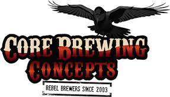

The Victorian Amateur Brewing Championships (Vicbrew 2013) will be held on 5th & 6th October 2013 at the Belgian Beer Café Eureka, 5 Riverside Quay, Southbank Melbourne. Melways reference: 2F E7 .
Placing (1st, 2nd or 3rd) in any category at Vicbrew 2013 qualifies entrant to submit an entry, in the same category, at AABC 2013 Canberra.
Online Entries:
Online Entry Registration is available for Vicbrew 2013 From
August 1st via compmaster http://www.compmaster.com.au
NOTE: Online entries will still need to be delivered to a Vicbrew 2013
collection centre by Saturday 21/09/2013
Entries may be submitted upto Saturday 21st September 2013 at the following collection points:
Champion Beer of Show
|
Best Club of Show
|
|
13. India Pale Ale Category
Sponsor
 |
Best Novice Brewer |
|
|
|
Vicbrew 2013
Entry Collection Points |
4. Amber & Dark Lager Sponsor Geelong Home Brewing Supplies
|
|
||
| 18. Specialty Beer Category Sponsor  |
3. Pilsener Category Sponsor |
7. American Pale Ale Sponsor |
| 10. Porter Category Sponsor  5. Strong Lager Category Sponsor 
|
12. Strong Stout Category Sponsor 17. Farmhouse Ale &
Wild Beer Catgory Sponsor
 |
9. Brown Ale Category Sponsor
|
1. Low Alcohol Category Sponsor  |
2. Pale Lager Category Sponsor 16. Wheat & Rye Beer Sponsor  |
14. Strong Ale Category Sponsor |
10. Stout Category Sponsor  |
Vicbrew
2013 Entry Form in pdf format (draft)
Categories and Styles
list for Vicbrew 2013
AABC 2013 Styleguides
in pdf format, one page per style, to be used at Vicbrew 2013.
AABC 2013 Styleguides in
pdf format, condensed version.
Beer Judging Form to be
used at Vicbrew 2013
We hope to see you at Vicbrew 2013.